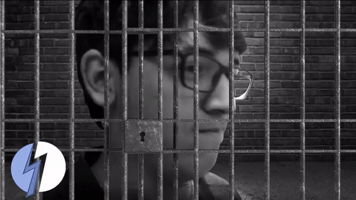
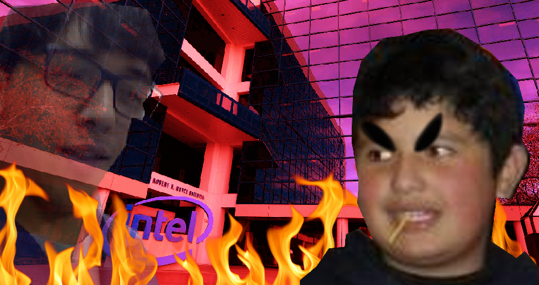

Al parecer a Lagraña le gusta comer papel?! El clasico Lagraña, mundialmente reconocido por su popular y bien diseñado sitio web Juntos64(TM) fue encontrado en una clase de Derechos del Trabajo comiendose un papel. En una entrevista exclusiva con El Rayo Diario, dijo que el papel estaba "muy rico" y que el papel lo haria "mas inteligente". Este ha sido robado de su papel y ha sido llevado a la policia mas cercana por sus crimenes de lesa humanidad contra los papeles (y quemar la compañia Intel.) Tambien fue despojado de no una, si no dos 3DS que acaba de comprar. 
FEDE SUPERA A AL CREADOR EN TINY TINY TINY
Erik (creador de el mundialmente aclamado BareiroPlaza, y su canal de youtube al que totalmente deberias suscribirte ahora por favor), ha sido superado por un beta-tester con el nombre de Fede "JokerLife" Beato en el juego que el creó, consiguiendo una puntuacion de 207. Sin embargo, culpo a su falta de mejor puntuacion por los supuestos bugs que tiene el juego, llamado Tiny Trainwreck. Contactamos a Erik, el creador, tiene que decir "callate fede, el juego esta bien, dejame en paz". Este hizo un intento en reclamar su gloria en un stream de Twitch de una hora, pero solo pudo conseguir 53 puntos. El video puede ser visto aqui.
ADOLESCENTE SUFRE INTOXICACION CON SALSA PICANTE
Ezequiel Palladino, chico de Berazategui tuvo que ser llevado al hospital el domingo pasado a un hospital cercano por intoxicacion de picante. El habria consumido tacos con una salsa super-picante a base de chile peruano, baklava, chiroka y otros ingredientes inventados. En declaracion de otras personas comiendo con el, un testigo menciono quelos tacos estaban "muuuuuuuuuuuuuuuuuuuuuuuuuuuy buenos", y otro que los de pollo eran los unicos buenos y que la salsa no tenia sabor alguno.
ESTUDIANTE DE SEXTO LE DICE A LAGRAÑA: CALLATE LAGRAÑA
El compañero de el incriminado Lagraña, Alexis Bareiro y estudiante en la SecundariaTécnica 4, menciona en una conferencia de prensa que el papel que se comió no estaba justificado. Las ultimas palabras que menciono fueron "callate, lagraña" y "shh, no me interesa", mientras este hablaba de su compañia favorita, AMD. Volveremos con mas detalles. Mientras tanto, tengan esta incriminadora imagen del acusado. 
{kind=link}